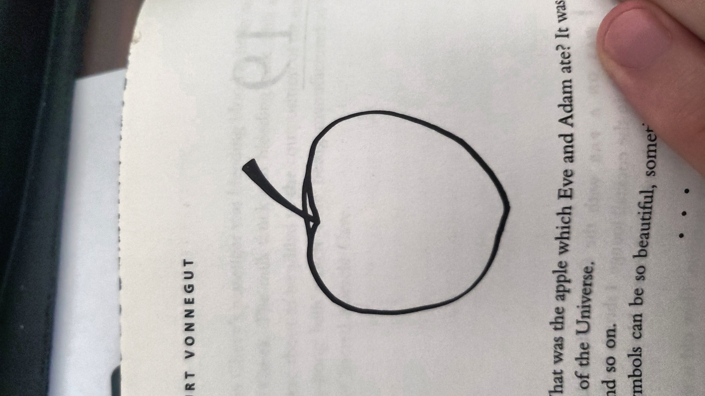

Draft of A Review of Breakfast of Champions
By Kurt Vonnegut
In Breakfast of Champions, Kurt Vonnegut emphasizes either how strange normal life is or how normal strange life is. By dispassionately, childishly, describing a sequence of events and the facts of everyday, Vonnegut holds a mirror up to our society so that we can see ourselves without the context of our experience living so far or holds up a novel without any context for the events described so that they can be colored by our lived experiences instead of his. He also invokes the question of free will versus a deterministic universe.
The book, written in 1973, addresses several themes that are highly visible parts of the public debate today. In the first few chapters, themes that emerge are the overwhelming role that cars and fuel consumption play in our world, racism and the legacy of slavery in our society, and gun violence and the absurdity of the tools of war.
Two key devices that Vonnegut uses to great effect is the narrator's interjection of their role relative to the behavior of the characters. This is related to the second device, the use of motive and lack of motive when interpreting and reporting the events of the books. This creates a sense of confusion in the reader about when the narrator is meant to be speaking, is it current to the events of the book, is it long after with the benefit of hindsight or is it irrelevant to the interpretation of the narrative?
This combination of narrative devices results in confusion about how realistic Vonnegut intends the book to be. Is he describing events that didn't happen? Is he descibing real events from the perspective of some impossible alien narrator? Or is he reporting on real historic events in a manner that is unfamiliar because it is outside of the traditional narrative or manner of reporting on those events in popular culture.
Vonnegut also develops a vocabulary of recurring childish language and uses langauge awkwardly as though the narrator is a new speaker of language. The grammatical structures used are decidely childish and not those of someone learning English as a second language. It develops an expository tone such as identifying some object in the scene and saying simply, here is what it looked like with a black and white drawing of a billboard or a pair of underpants.  He also presents less neutral images in a similar manner saying "" and presenting a hand drawn balck and white image of a World War II German military helmet. It is strange to see that sort of thing presented so apathetically.
Throughout the book, one of the central characters, Dwayne Hoover, is said to be motivated by "bad chemicals in his head". This is tied in to the idea in the book that ideas can be as infective and devastating as illnesses. Vonnegut seems to take a deterministic approach to the world in the book where causes and effects can be strung together in a "butterfly effect" type of way. For example, Kilgore Trout one of the central characters, publishes science fiction in dirty magazines. The editors use his writing to beef up the magazines in between the dirty pictures. Eventually Dwayne Hover reads one of these stories and the narrator explains that it makes him go crazy by explaing to him that he is the only being with free will and that those around him are automatons.
This is a useful device to the author because it allows him to introduce the narrator fully as the "God" who delivers this information to Dwayne, hammer home the theme of ideas as viruses, and juxtapose the idea that Dwayne is the only being with free will against the role of Kilgore trout the author of the book that combined with Dwaynes mental state to drive him crazy. This is then framed very explicitly against the role of the narrator who by then end of the book is described as openly making ad hoc changes to the universe that he apparently both designs and occupies. Going even further, the reader is unsure of the relationship between the narrator and Vonnegut himself. Vonnegut was clearly a pretty crazy person, but it is very unclear to what extent he actually designed the narrator as himself or whether his actual authorship is another level up in the story within a story structure. Lastly, the book clearly identifies Dwayne's belief that he is the only "real" human as the reason for his "insanity" but doesn't draw a clear line between these things and his actions as an insane person which is to attack several other more peripheral characters in the novel.
The book clearly leans toward a view of the world in which each action or behavior has preceding causes and conditions that result in the action or behavior, but which are not at all clear to the reader. For instance, multiple times, wars are described as prolonged periods of time where nations tried to drop things from airplanes onto each other. The historical context of the Vietnam war and the fact that those things are bombs are a narrative that the reader adds but by presenting the idea so innocently, Vonnegut points out that the causes and conditions of the Vietnam war don't necessarily make more sense than those that drive the surreal crazy behavior of the individual characters in the novel.
Overall, a central tool that Vonnegut uses is the fact that while most of the books events seem unlikely to the reader, without the mental narratives we can put around historical events included in the book, those events don't make a lot of sense either. Further, the events of the book are totally possible and believable until they are put together and the reader starts to question whether so many crazy things could conspire to produce the results depicted in the book.
The book is most relevant to today because it questions whether the behaviors we engage in really have justification. Do we burn oil to produce enery to support ourselves or do we exist to support the burning of oil. Is it necessary to have cars and guns? Do the things that make us angry or sad or happy really need to do that or is that just an arbitrary reaction without causes that make these actions and decisions necessary.
A useful example is Dwayne Hoover's wife, who died after drinking Drano. The book presents no real motive for this action, just stating that there were bad chemicals involved. Thus it poses that extreme action alongside every other action. Simply something that occured due to a specific set of causes and conditions, which aren't explicitly included in the narrative.
What is the central theme of the novel?
Why is it relevant today?
What are other relevant books to read? The book calls to mind
What scholarship is available on the book?
This promising of great secrets, Simpson, 2004
The conversion of Heliogabalus, Merril, 1977
Vonnegut and the Myths and Symbols of Meaning, Hume, 1982